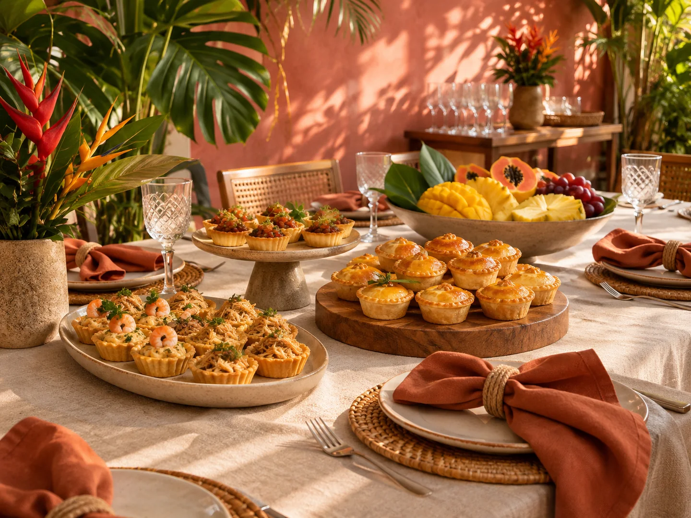

Coffee break
Café, frutas e salgados em porções pequenas para pausas de trabalho.
Buffet para celebrações e encontros de empresa. Comece pelo tipo de evento, pelo número de pessoas e pelo formato que combina com a ocasião.
Planejar meu evento
O tipo de ocasião, o número de pessoas e a forma de servir ajudam a equipe a preparar a proposta.
Este é um pedido de teste. Ele não reserva uma data.